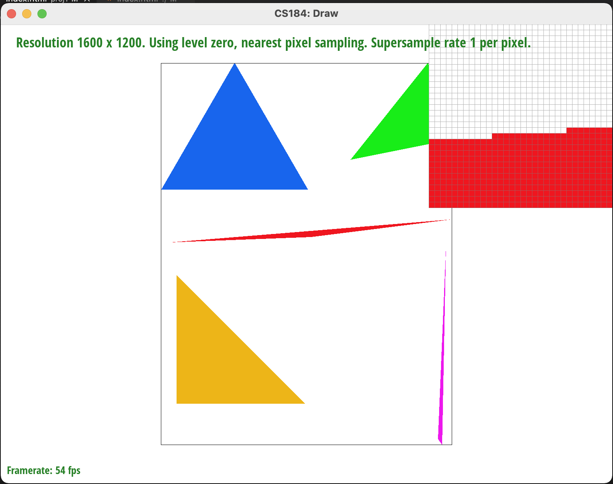

Here goes project overview!
Give a high-level overview of what you implemented in this project. Think about what you've built as a whole. Share your thoughts on what interesting things you've learned from completing the project.
Walk-through: Our algorithm first align each given points into the corresponding pixel center with formular (floor(x)+0.5,floor(y)+0.5). Then we calculate the bounding box of the triangle. The bounding box is defined using four points: X_max, X_min, Y_max, and Y_min. These points are calculated by finding the corresponding max/min value of the X and Y of the three given triangle points.
Then, we loop through every sample point inside the bounding box to check if they land within our triangle area. To design this algorithm, we notice the following facts: 1) For any given point P(x,y) and vector p0->p1:(x1-x0,y1-y0), if vector V, p0->p: (x-x0,y-y0), and the normal (perpendicular) vector N of p0->p1, have V * N > 0, then the point p is on the side that the normal vector points toward. Similarly, if V * N = 0, the point p is on the line p0->p1; if V * N < 0, the point p is on the opposite side that the normal vector points toward. In other words, this equation gives us a way to check which side of the vector a given point p will land on. Derived from this fact, if we assume all three normal vectors of three edges of a triangle are pointing inward, then by checking if V * N > 0 for all three V and N, we could know if a point is inside the triangle. Similarly, we could tackle the edge case (where a point lies exactly on the line) by checking if V * N = 0. This way of checking if a point is inside triangle is known as "Intersection of three half-plane" or "Three line tests". As instructed, we consider a point is inside triangle when the point lies exactly on the edge.
Now we know the basic theory behind "Three line tests" method, but notice that we made an assumption, which is the three normal vectors are all pointing inward. This assumption is not always true as the three points of the triangle could be given in any order. So we have to consider how the order of the points are given, counter-clock-wise or clock-wise, to make sure all normal vectors are pointing inward. We could go through every case of how three points are given with if-else statement, but that will be too complicated. With our observation, we notice that a normal vector points inward only when it points to the third point of the triangle, which could be wriiten as V_3 * N_12 > 0. Thus, no matter which order our points are given, we could check this equation for each edge, and if the V_3 * N_12 < 0, we flip the normal vector by N = -N to make sure it points inward. Then we could simply use V_point * N > 0 for three edges to determine if a point is inside a triangle. A further optimization on this is duscussed on the extra credit part.
Our algorithm is no worse than the one that checks each sample with the bounding box of the triangle because that is exactly how our program works. Our algorithm checks every sample points within the calculated bounding box. More details of the algroithm has already been discussed above.
Here we present the "test4.svg" with pixel inspector centered on an interesting part of the scene. Through this image, we notice obvious aliasing on the edge of the triangle. This will be the proble we try to solve in the next task.
Extra credit: We optimized our approach by leveraging the power of Barycentric coordinate and performing several other optimizations. For using "Half-plane test" algorithm, we have to consider the winding order of the three given points, which raises additional run-time complexity. With Barycentric coordinate, we could easily determine if a point is inside a triangle by checking if all three coordinates are non-negative. This essentially integrates our observation mentioned in the previous section, and allows us to totally ignore the winding order of the given points, which makes the rasterization algroithm super simple but powerful. In addition, we did several minor optimizations such as removing the redundant part outside the for loop. Here is a timing comparision before and after optimization.
| Test case | Before optimizations | After optimizations |
|---|---|---|
| test3.svg | 2.0 | 1.0 |
| test4.svg | 2.0 | 1.0 |
| test5.svg | 2.0 | 1.0 |
Here goes task 2!